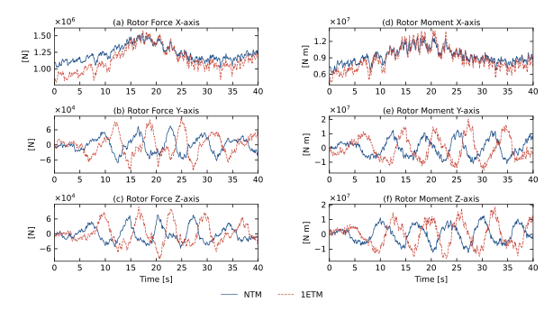

图3.5-7给出了有效时段内的轮毂坐标系气动力时程，图3.5-8按Qiu等[139]的六分量表达形式展示有效时段起始40 s的细部变化。表3.5-1列出完整有效时段的轴向气动力及转矩统计值。额定风速下，NTM与1ETM的轮毂坐标系轴向气动力均值分别为1.139 MN和1.034 MN，标准差分别为0.169 MN和0.221 MN，最大值分别为1.739 MN和1.954 MN；轴向气动力矩均值分别为9.569 MN·m和9.252 MN·m，最大值分别为16.360 MN·m和19.583 MN·m。在本组随机实现中，极端湍流工况虽具有较低的轴向气动力均值，但波动幅度与极值较大。上述六分量均为AeroDyn原生轮毂旋转坐标系气动合力及合力矩，并非塔顶结构反力；在实施结构荷载传递前，仍需依据方位角及轮毂运动进行坐标转换、作用点移置及合力与合力矩守恒校核。

图3.5-8 轮毂气动力及力矩六分量时程局部（100～140 s）